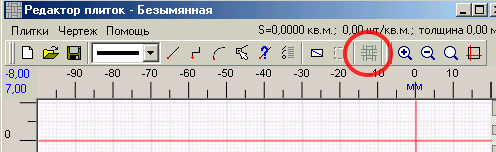
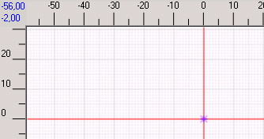
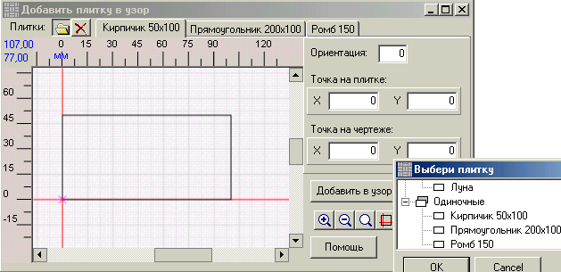
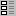
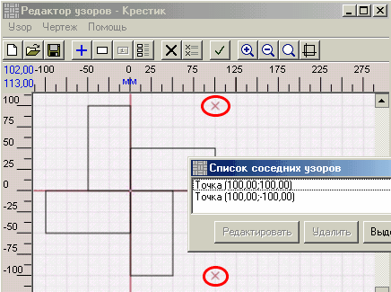
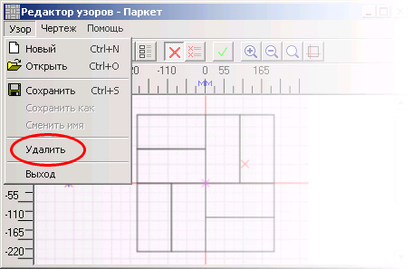

Можно воспользоваться кнопкой
Можно воспользоваться кнопкой 
Назначение узора - показать программе, как именно заполнять участок плиткой. Чтобы задать узор, надо нарисовать его фрагмент. При заполении участка плиткой программа будет помещать на чертеж этот фрагмент, а рядом - такие же фрагменты. Куда именно помещать соседние фрагменты, указывается при составлении узора.
Надо создать новый узор или открыть существующий через меню Узор окна Редактор узоров или кнопки

Расставьте на чертеже плитки так, как они будут выглядеть в узоре. Для каждой плитки нужно выполнить следующее:
1. Отметить на чертеже точку, в которую будет помещена плитка.
2. Открыть окно "Добавить плитку в узор".
3. В окне выбрать на плитке точку, которая попадет в точку, отмеченную на шаге 1.
4. В то же окне задать ориентацию плитки.
5. И в том же окне нажать кнопку Добавить в узор .
Ниже подробно описаны эти шаги.
Кнопка Обозначить место плитки - на чертеже выбирается точка, куда будет помещена плитка (в этой главе она называется точка на чертеже )

Если эта точка обозначает самую первую плитку узора, то она будет также базовой точкой узора и обозначаться дополнительной меткой - фиолетовым крестиком.
Кнопка Добавить плитку

И точка на узоре, и точка на плитке задаются щелчком левой кнопки мыши. Эти точки отображаются синим крестиком. Координаты можно корректировать в окне с плиткой. Окно с плиткой можно закрывать и открывать - цифры запоминаются. Подробнее см. Добавление плитки в узор.
После добавления плитки в узор метка на чертеже снимается и ее нужно ставить снова, в другом месте. Это сделано специально, чтобы не вставить множество плиток в одно и то же место.
Есть более простой способ добавления плитки в узор - кнопка
Кнопка  открывает окно, в котором можно отредактировать расположение плиток в узоре или удалить их из узора.

Поведение этого списка описано в главе Редактирование графических объектов, за исключением того, что при нажатии Редактировать открывается окно редактирования положения плитки в узоре:
После того, как узор задан, нужно указать базовые точки соседних узоров, чтобы программа смогла заполнить площадь. Для этого надо в окне редактора узоров нажать кнопку

Примеры нескольких возможных узоров из прямоугольной плитки:
На каждом рисунке показан элементарный фрагмент узора. Его базовая точка - в центре. Красными крестиками обозначены точки, куда при заполнении участка плиткой будут помещены соседние узоры (своими базовами точками). Не нужно заботиться о том, чтобы расставить точки во всех направлениях. Программа сама найдет точки в направлениях, противоположных заданным.
|
Предупреждение. В этой версии программы не решен вопрос о том, как учитывать технологические зазоры при укладке. Есть два варианта решения этой проблемы:
Первый , наиболее простой, но не вполне корректный - рисовать плитку чуть больше реальных размеров. При этом узоры составляются просто и наглядно. Когда алгоритм программы изменится так, что будет учитывать технологические зазоры, прийдется перерисовать все плитки. Второй вариант - составлять узор с зазорами. При разработке проектов как правило используется довольно мелкий масштаб и зазоры будут незаметны. Единственное неудобство - при проверке узоров будет постоянно выдаваться предупреждение об обнаружении пустот. |
В конце работы надо сохранить узор.
Можно открыть существующий узор для редактирования (меню Узоры -> Открыть или кнопка
Если поставить флажок "Предпросмотр", то в этом же окне можно посмотреть на указанный узор:
Когда поставлен флажок "Фильтр узоров", сначала выбирается плитка. Становится доступен список узоров, составленных с использованием этой плитки:
Открытый в редакторе плиток узор, можно удалить. Для удаления нужно воспользоваться меню Узор :

Узор можно проверить на отсутствие пустот и наложений плиток. См. главу Проверка узора.